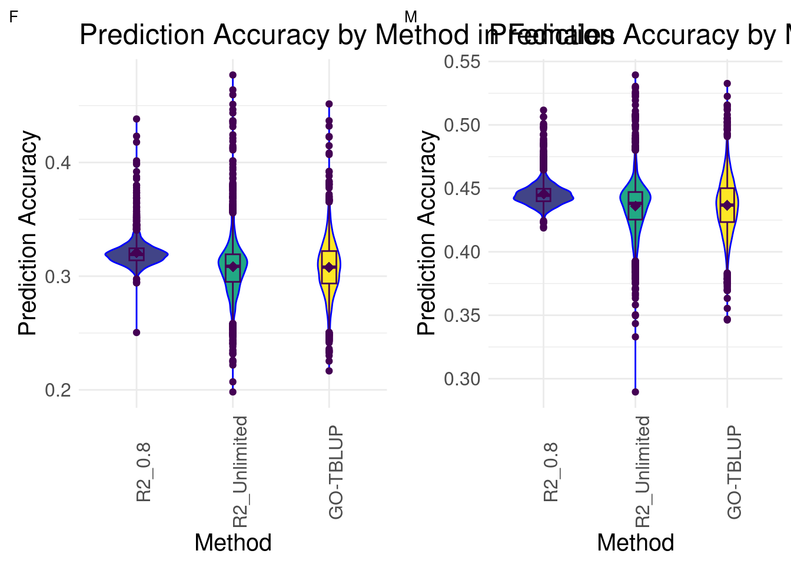
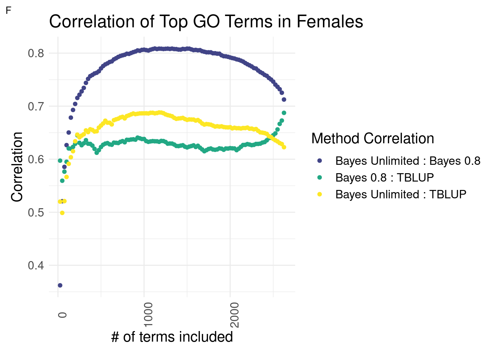
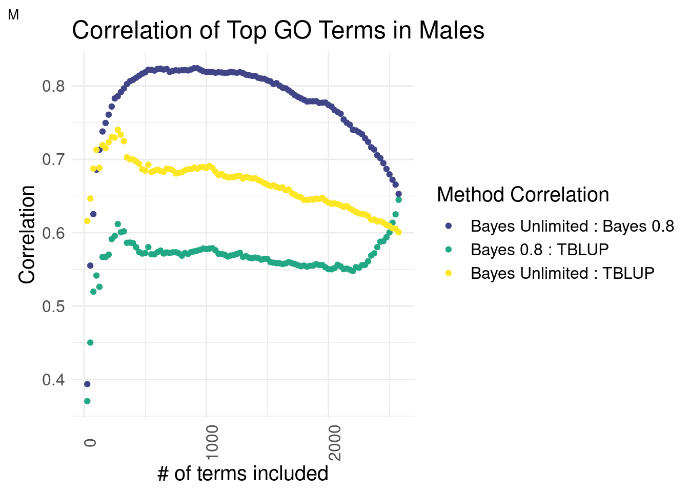

Last updated: 2024-03-26
Checks: 7 0
Knit directory: dgrp-starve/
This reproducible R Markdown analysis was created with workflowr (version 1.7.1). The Checks tab describes the reproducibility checks that were applied when the results were created. The Past versions tab lists the development history.
Great! Since the R Markdown file has been committed to the Git repository, you know the exact version of the code that produced these results.
Great job! The global environment was empty. Objects defined in the global environment can affect the analysis in your R Markdown file in unknown ways. For reproduciblity it’s best to always run the code in an empty environment.
The command set.seed(20221101) was run prior to running the code in the R Markdown file. Setting a seed ensures that any results that rely on randomness, e.g. subsampling or permutations, are reproducible.
Great job! Recording the operating system, R version, and package versions is critical for reproducibility.
Nice! There were no cached chunks for this analysis, so you can be confident that you successfully produced the results during this run.
Great job! Using relative paths to the files within your workflowr project makes it easier to run your code on other machines.
Great! You are using Git for version control. Tracking code development and connecting the code version to the results is critical for reproducibility.
The results in this page were generated with repository version 698ca71. See the Past versions tab to see a history of the changes made to the R Markdown and HTML files.
Note that you need to be careful to ensure that all relevant files for the analysis have been committed to Git prior to generating the results (you can use wflow_publish or wflow_git_commit). workflowr only checks the R Markdown file, but you know if there are other scripts or data files that it depends on. Below is the status of the Git repository when the results were generated:
Ignored files:
Ignored: .snakemake/
Ignored: code/OLD/PCA/four-comp.76979.err
Ignored: code/OLD/PCA/four-comp.76979.out
Ignored: code/OLD/PCA/snpGene.77509.err
Ignored: code/OLD/PCA/snpGene.77509.out
Ignored: code/OLD/PCA/snpGene.77515.err
Ignored: code/OLD/PCA/snpGene.77515.out
Ignored: code/OLD/methodComp/bayesC/method-f.4753.err
Ignored: code/OLD/methodComp/bayesC/method-f.4753.out
Ignored: code/OLD/methodComp/bayesC/method-m.4754.err
Ignored: code/OLD/methodComp/bayesC/method-m.4754.out
Ignored: code/OLD/methodComp/bglr/err-bglr-f.5381.err
Ignored: code/OLD/methodComp/bglr/err-bglr-m.5382.err
Ignored: code/OLD/methodComp/bglr/out-bglr-f.5381.out
Ignored: code/OLD/methodComp/bglr/out-bglr-m.5382.out
Ignored: code/OLD/methodComp/f/3330.trace-f.out
Ignored: code/OLD/methodComp/f/meth-f.4682.out
Ignored: code/OLD/methodComp/f/method-f.3892.out
Ignored: code/OLD/methodComp/f/method-f.4065.out
Ignored: code/OLD/methodComp/f/method-f.4664.out
Ignored: code/OLD/methodComp/f/method-f.4743.out
Ignored: code/OLD/methodComp/m/3331.trace-m.err
Ignored: code/OLD/methodComp/m/3331.trace-m.out
Ignored: code/OLD/methodComp/m/meth-m.4676.err
Ignored: code/OLD/methodComp/m/meth-m.4676.out
Ignored: code/OLD/methodComp/m/meth-m.4685.err
Ignored: code/OLD/methodComp/m/meth-m.4685.out
Ignored: code/OLD/methodComp/m/method-m.4745.err
Ignored: code/OLD/methodComp/m/method-m.4745.out
Ignored: code/OLD/methodComp/method-f.4751.err
Ignored: code/OLD/methodComp/method-f.4751.out
Ignored: code/OLD/methodComp/method-m.4752.err
Ignored: code/OLD/methodComp/method-m.4752.out
Ignored: code/OLD/methodComp/method-m.4765.err
Ignored: code/OLD/methodComp/method-m.4765.out
Ignored: code/OLD/regress/regress.81916.err
Ignored: code/OLD/regress/regress.81916.out
Ignored: code/OLD/regress/regress.81918.err
Ignored: code/OLD/regress/regress.81918.out
Ignored: code/OLD/regress/regressF.81919.err
Ignored: code/OLD/regress/regressF.81919.out
Ignored: code/OLD/regress/regress_f_adj.109973.err
Ignored: code/OLD/regress/regress_f_adj.109973.out
Ignored: code/OLD/regress/regress_f_adj.109974.err
Ignored: code/OLD/regress/regress_f_adj.109974.out
Ignored: code/OLD/regress/regress_m_adj.109971.err
Ignored: code/OLD/regress/regress_m_adj.109971.out
Ignored: code/OLD/regress/regress_m_adj.109972.err
Ignored: code/OLD/regress/regress_m_adj.109972.out
Ignored: code/bayesC/
Ignored: data/
Ignored: snake/
Ignored: zz_lost/
Unstaged changes:
Modified: code/scripts/drymake.sh
Modified: code/tempRfree.R
Modified: srfile.yaml
Note that any generated files, e.g. HTML, png, CSS, etc., are not included in this status report because it is ok for generated content to have uncommitted changes.
These are the previous versions of the repository in which changes were made to the R Markdown (analysis/goBayesCor.Rmd) and HTML (docs/goBayesCor.html) files. If you’ve configured a remote Git repository (see ?wflow_git_remote), click on the hyperlinks in the table below to view the files as they were in that past version.
| File | Version | Author | Date | Message |
|---|---|---|---|---|
| Rmd | 698ca71 | nklimko | 2024-03-26 | wflow_publish(“analysis/goBayesCor.Rmd”) |
| html | 79c1c02 | nklimko | 2024-03-26 | Build site. |
| Rmd | fd1e701 | nklimko | 2024-03-26 | wflow_publish(“analysis/goBayesCor.Rmd”) |
#plotmaker functions----
ggMake3 <- function(data, sex, psize, custom.title, custom.Xlab, custom.Ylab){
plothole <- ggplot(data,aes(y=cor,x=method, fill=method))+
labs(x=custom.Xlab,y=custom.Ylab, tag=sex, title=custom.title) +
geom_violin(color = 'blue', width = 0.65) +
geom_boxplot(color='#440154FF', width = 0.15) +
theme_minimal()+
scale_fill_viridis(discrete=TRUE, begin=0.2)+
theme(axis.text.x = element_text(angle = 90),
text=element_text(size=15),
plot.tag = element_text(size=10),
legend.position = 'none') +
stat_summary(fun=mean, color='#440154FF', geom='point',
shape=18, size=3, show.legend=FALSE)
return(plothole)
}
methodCorMake <- function(data, sex, custom.title, custom.Xlab, custom.Ylab){
plothole <- ggplot(data, aes(x=method, y=cor, color=index))+
labs(x=custom.Xlab,y=custom.Ylab, tag=sex, title=custom.title, color='Method Correlation') +
geom_point() +
theme_minimal()+
scale_color_viridis(discrete = TRUE, begin = 0.2,
labels=c('Bayes Unlimited : Bayes 0.8','Bayes 0.8 : TBLUP','Bayes Unlimited : TBLUP')) +
theme(axis.text.x = element_text(angle = 90),
text=element_text(size=15),
plot.tag = element_text(size=10))
return(plothole)
}load('data/rmdTables/goRcomp/allTables.Rdata')
gg[[1]] <- ggMake3(fPreds, 'F', 1, 'Prediction Accuracy by Method in Females', 'Method', 'Prediction Accuracy')
gg[[2]] <- ggMake3(mPreds, 'M', 1, 'Prediction Accuracy by Method in Males', 'Method', 'Prediction Accuracy')
gg[[3]] <- methodCorMake(fCors, 'F', 'Correlation of Top GO Terms in Females', '# of terms included', 'Correlation')
gg[[4]] <- methodCorMake(mCors, 'M', 'Correlation of Top GO Terms in Males', '# of terms included', 'Correlation')The goal of this assessment was to determine the effectiveness of R2 selection retroactively. We had previously generated data using GO terms to improve prediction accuracy for two methods:
In our initial trials, we set the expected proportion of variance explained(POVE), R2, to 0.8 based on parameter optimization findings. The original method had a had a single fixed effect while the GO-annotated method had two fixed effects in the model.
After testing back and forth, we settled on removing the R2 limitations completely to allow the model to internally gerenate R2. In comparison, the original GO-BayesC had a hard limit on R2 alongside a relative limit between effects.
plot_grid(gg[[1]], gg[[2]], ncol = 2)
| Version | Author | Date |
|---|---|---|
| 79c1c02 | nklimko | 2024-03-26 |
In both females and males, we see that the distributions of GO-BayesC with Unlimited R2 and GO-TBLUP are more similar to each other than to GO-BayesC with 0.8 R2. R2_Unlimited contains the maximum and minimum prediction accuracies across all methods for both sexes, followed by GO-TBLUP.
The following graphs were generated by finding the correlation of top subsections between methods after ordering GO terms by ‘prediction accuracy’ from Bayes Unlimited. This was done to assess the effectiveness of constraining R2 or letting the model generate R2 internally by comparing the two cases to each other along with GO-TBLUP, an ‘outgroup’ that has shown to select for biologically relevatn GO terms.
plot_grid(gg[[3]], ncol=1)
| Version | Author | Date |
|---|---|---|
| 79c1c02 | nklimko | 2024-03-26 |
Expectedly, the Bayesian methods are most similar to each other across the interior section.
In females, the relationships of each Bayesian method to GO-TBLUP are indistinguishable for top terms.
or
In females, it is unclear which Bayesian method has a higher correlation with GO-TBLUP.
plot_grid(gg[[4]], ncol=1)
| Version | Author | Date |
|---|---|---|
| 79c1c02 | nklimko | 2024-03-26 |
There is a striking difference in males. The top terms of Bayes Unlimited and TBLUP outperform the correlation of Bayesian methods by a slim margin. This effect deteriorates around the top 250 terms mark. This suggests that the top terms are correlated while the inclusion of less predictive terms decreases the correlation coefficient.
Bayes Unlimited has a distinctly higher correlation to GO-TBLUP than Bayes R2 = 0.8.
Leaving BayesC to internally decide R2 improves maximum prediction accuracy. This selection has a higher correlation to proven method GO-TBLUP, suggesting that the models predict similar terms. This strengthens our gene enrichment analysis as top terms are more consistent across models than previously described.
sessionInfo()R version 4.1.2 (2021-11-01)
Platform: x86_64-pc-linux-gnu (64-bit)
Running under: Rocky Linux 8.5 (Green Obsidian)
Matrix products: default
BLAS/LAPACK: /opt/ohpc/pub/libs/gnu9/openblas/0.3.7/lib/libopenblasp-r0.3.7.so
locale:
[1] LC_CTYPE=en_US.UTF-8 LC_NUMERIC=C
[3] LC_TIME=en_US.UTF-8 LC_COLLATE=en_US.UTF-8
[5] LC_MONETARY=en_US.UTF-8 LC_MESSAGES=en_US.UTF-8
[7] LC_PAPER=en_US.UTF-8 LC_NAME=C
[9] LC_ADDRESS=C LC_TELEPHONE=C
[11] LC_MEASUREMENT=en_US.UTF-8 LC_IDENTIFICATION=C
attached base packages:
[1] stats graphics grDevices utils datasets methods base
other attached packages:
[1] reshape2_1.4.4 melt_1.10.0 ggcorrplot_0.1.4.1 lubridate_1.9.3
[5] forcats_1.0.0 stringr_1.5.0 purrr_1.0.1 readr_2.1.4
[9] tidyr_1.3.0 tibble_3.2.1 tidyverse_2.0.0 scales_1.2.1
[13] viridis_0.6.4 viridisLite_0.4.2 qqman_0.1.9 cowplot_1.1.1
[17] ggplot2_3.4.4 data.table_1.14.8 dplyr_1.1.3 workflowr_1.7.1
loaded via a namespace (and not attached):
[1] Rcpp_1.0.11 getPass_0.2-2 ps_1.7.5 rprojroot_2.0.3
[5] digest_0.6.33 utf8_1.2.3 plyr_1.8.9 R6_2.5.1
[9] evaluate_0.21 highr_0.10 httr_1.4.7 pillar_1.9.0
[13] rlang_1.1.1 rstudioapi_0.15.0 whisker_0.4.1 callr_3.7.3
[17] jquerylib_0.1.4 rmarkdown_2.23 labeling_0.4.3 munsell_0.5.0
[21] compiler_4.1.2 httpuv_1.6.12 xfun_0.39 pkgconfig_2.0.3
[25] htmltools_0.5.5 tidyselect_1.2.0 gridExtra_2.3 fansi_1.0.4
[29] calibrate_1.7.7 tzdb_0.4.0 withr_2.5.0 later_1.3.1
[33] MASS_7.3-60 grid_4.1.2 jsonlite_1.8.7 gtable_0.3.4
[37] lifecycle_1.0.3 git2r_0.32.0 magrittr_2.0.3 cli_3.6.1
[41] stringi_1.7.12 cachem_1.0.8 farver_2.1.1 fs_1.6.3
[45] promises_1.2.0.1 bslib_0.5.0 generics_0.1.3 vctrs_0.6.4
[49] tools_4.1.2 glue_1.6.2 hms_1.1.3 processx_3.8.2
[53] fastmap_1.1.1 yaml_2.3.7 timechange_0.2.0 colorspace_2.1-0
[57] knitr_1.43 sass_0.4.7